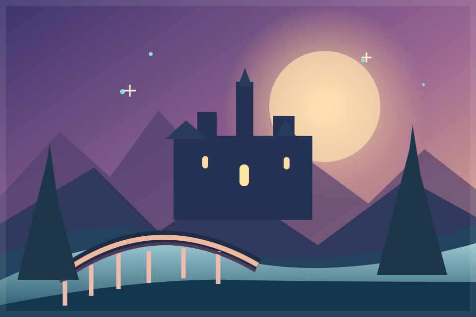

Игры, в которые
хочется исчезнуть.
Оригинальные миры, смелые идеи и приключения, созданные с душой. Добро пожаловать на PunkPort.

КОНЦЕПТ-АРТ • НЕ СКРИНШОТ ИГРЫChibi Fantasy
RPG
Собери команду. Выбери класс. Отправляйся в подземелья, где каждое решение меняет ход приключения.
Открой свой мир.
Разные жанры, одна любовь к играм. Следи за проектами и выбирай, что ждёшь больше всего.
Не просто список.
Место для идей.
PunkPort объединяет собственные игровые проекты — от первых прототипов до больших приключений. Здесь можно следить за их развитием и будущими релизами.
Узнать о платформе ↗Авторские игры
Свои механики, персонажи и эксперименты.
Простой доступ
Прямые загрузки после публикации сборок.
Кооператив
Друзья, лобби и совместные приключения — в планах.
Честная разработка
Никаких выдуманных релизов и обещаний готовности.
Что дальше?
Ближайшие направления разработки платформы.
Публичный каталог PunkPort
Адаптивный сайт, карточки проектов, поиск, фильтры, избранное и подготовка к размещению игровых сборок.
Загрузки и обновления
Проверенные Windows-сборки, версии игр и удобная установка.
Аккаунты, друзья, лаунчер
Отдельный сервер, профили, кооперативные приглашения и синхронизация сохранений.
Сделано с характером.
PunkPort — авторская площадка для оригинальных игр. Мы начинаем с красивой витрины проектов и постепенно развиваем её в полноценную игровую экосистему.